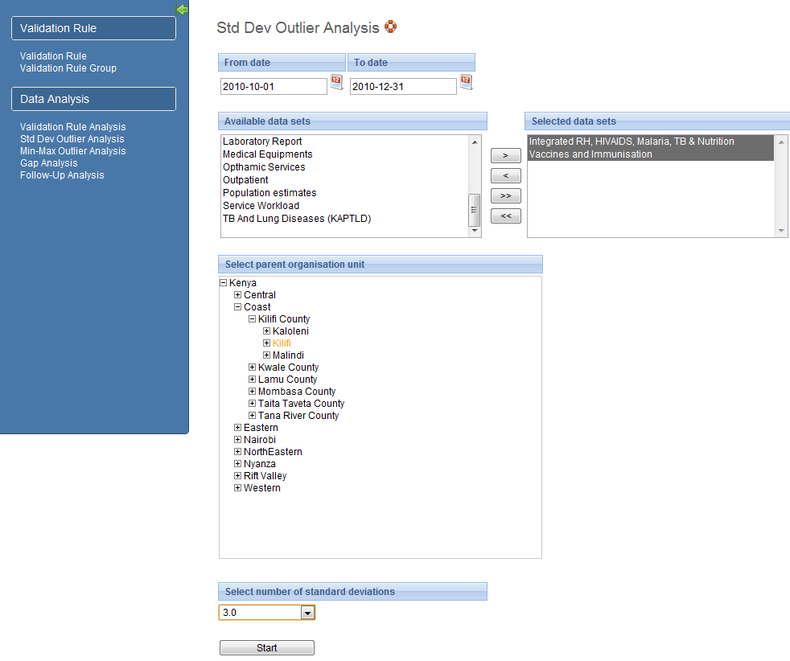

You can access Outlier analysis from the Services->Data Quality menu.
The standard deviation based outlier analysis provides a mechanism for revealing values that are numerically distant from the rest of the data. Outliers can occur by chance, but they often indicate a measurement error or a heavy-tailed distribution (leading to very high numbers). In the former case one wishes to discard them while in the latter case one should be cautious in using tools or interpretations that assume a normal distribution. The analysis is based on the standard normal distribution.
Select what data to analyse:
First, select the from and to date for the data to include in the analysis.
Second, select the data set from which to pick data elements from.
Third, select all or some of the data elements in the data set by double-clicking or marking them and clicking the add/remove buttons.
Fourth, select the parent organisation unit to use. All children of the organisation unit will be included.
Fifth, select the number of standard deviations. This refers to the number of standard deviations the data is allowed to deviate from the mean before it is classified as an outlier.
|  |
Analysis result:
The potential outlier values discovered will be presented in a list after the analysis process is finished. The data element, organisation unit, period, minimum value, actual value, and maximum value will be displayed for each outlier. The minimum and maximum values refer to the border values derived from the number of standard deviations selected for the analysis.
Each outlier value can be modified directly in the analysis result page. The value can be modified by clicking inside the corresponding field in the value column, entering a value and then navigate away from that field either by clicking tab or anywhere outside the field. The system will provide an alert if the value is still outside the defined minimum and maximum values, but the value will saved in any case. The field will have a red background color if the value is outside the range, and a green if inside.
Each outlier value can be marked for further follow-up by clicking the star icon.